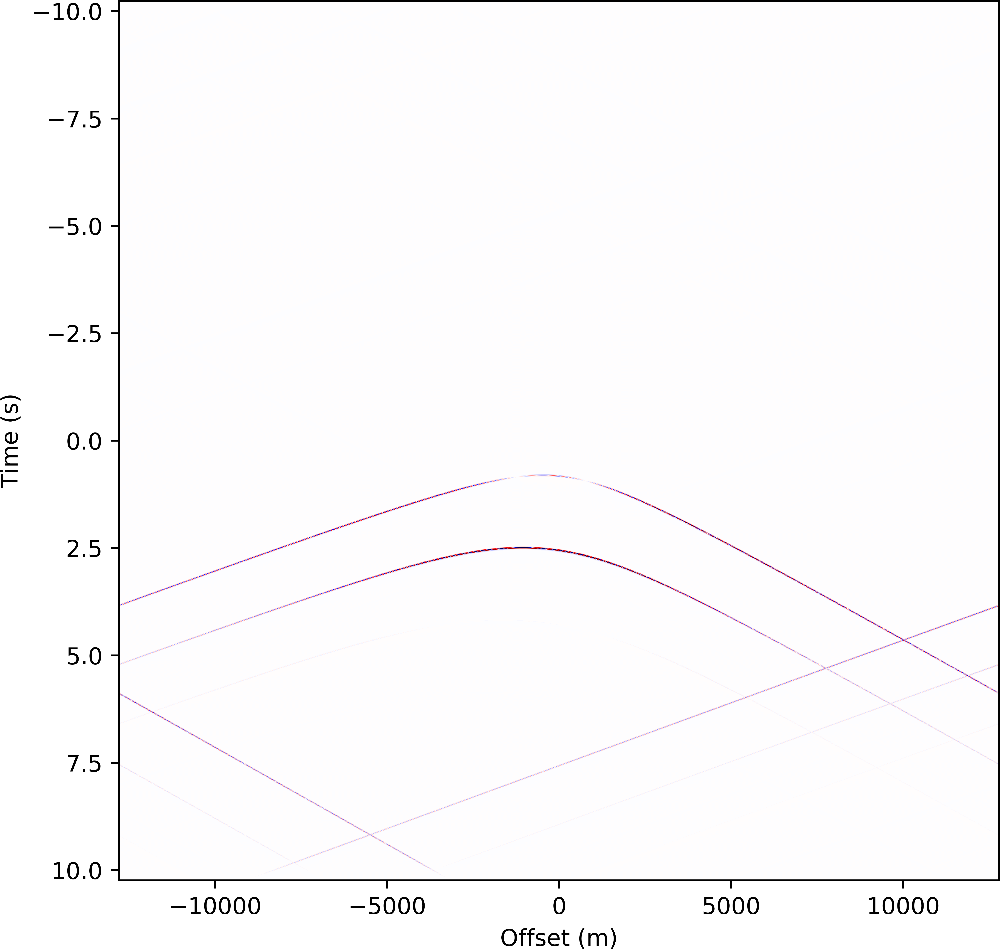

Layered_NRM_k1_w module¶
Routines for modelling wavefields in 1.5D non-reciprocal media.
| Authors: | Christian Reinicke (c.reinicke@tudelft.nl), Kees Wapenaar (), and Evert Slob () |
|---|---|
| Copyright: | Christian Reinicke (c.reinicke@tudelft.nl), Kees Wapenaar (), and Evert Slob () |
-
class
Layered_NRM_k1_w.Layered_NRM_k1_w(nt, dt, nr, dx1, verbose=False, eps=None, x3vec=array([0.]), avec=array([0.]), b11vec=array([0.]), b13vec=array([0.]), b33vec=array([0.]), g1vec=array([0.]), g3vec=array([0.]), ReciprocalMedium=False, AdjointMedium=False)[source]¶ Bases:
Wavefield_NRM_k1_w.Wavefield_NRM_k1_wis a class to model wavefields in 1.5D (non-)reciprocal media in the horizontal-wavenumber frequency domain.
The class Layered_NRM_k1_w defines a 1.5D (non-)reciprocal medium and a scalar wavefield. We consider all horizontal-wavenumbers and all frequencies, that are sampled by the given number of samples and by the given sample intervals, in space (‘nr’, ‘dx1’) as well as in time (‘nt’, ‘dt’).
Parameters: nt : int
Number of time samples.
dt : int, float
Time sample interval in seconds.
nr : int
Number of space samples.
dx1 : int, float
Space sample interval in metres.
verbose : bool, optional
Set ‘verbose=True’ to receive feedback in the command line.
eps : int, float, optional
A real-valued scalar can be assigned to ‘eps’ to reduce the wrap-around effect of wavefields in the time domain. If the inverse Fourier transform is defined as,
\(f(t) = \int F(\omega) \; \mathrm{e}^{\mathrm{j} \omega t} \mathrm{d}\omega\),
which is ensured if the function K1W2X1T is used, ‘eps’ (\(=\epsilon\)) should be positive to the suppress wrap-around effect from positive to negative time,
\(f(t) \mathrm{e}^{- \epsilon t} = \int F(\omega + \mathrm{j} \epsilon) \; \mathrm{e}^{\mathrm{j} (\omega + \mathrm{j} \epsilon) t} \mathrm{d}\omega\).
Recommended value eps = \(\frac{3 nf}{dt}\).
x3vec : numpy.ndarray
Vertical spatial vector \(x_3\), for n layers ‘x3vec’ must have the shape (n,). We define the \(x_3\)-axis as downward-pointing. Implicitly, the first value on the \(x_3\)-axis is zero (not stored in ‘x3vec’).
avec : numpy.ndarray
Medium parameter \(\alpha\) (real-valued), for n layers ‘avec’ must have the shape (n,).
b11vec : numpy.ndarray
Medium parameter \(\beta_{11}\) (real-valued), for n layers ‘b11vec’ must have the shape (n,).
b13vec : numpy.ndarray, optional
Medium parameter \(\beta_{13}\) (real-valued), for n layers ‘b13vec’ must have the shape (n,).
b33vec : numpy.ndarray
Medium parameter \(\beta_{33}\) (real-valued), for n layers ‘b33vec’ must have the shape (n,).
g1vec : numpy.ndarray, optional
Medium parameter \(\gamma_1\) (real-valued for non-reciprocal media), for n layers ‘g1vec’ must have the shape (n,).
g3vec : numpy.ndarray, optional
Medium parameter \(\gamma_3\) (real-valued for non-reciprocal media), for n layers ‘g3vec’ must have the shape (n,).
ReciprocalMedium : bool, optional
For non-reciprocal media set ‘ReciprocalMedium=False’, for reciprocal media set ‘ReciprocalMedium=True’.
AdjointMedium : bool, optional
Set ‘AdjointMedium=True’ to compute scattering coefficients and propagators in an adjoint medium \(^{(a)}\). We have defined the scattering and propagation in the adjoint medium only for flux-normalisation.
Returns: class
A class to model a wavefield in a 1.5D non-reciprocal medium in the horizontal-wavenumber frequency domain. The following instances are defined:
- x3vec: \(x_3\).
- avec: \(\alpha\).
- b11vec: \(\beta_{11}\).
- b13vec: \(\beta_{13}\).
- b33vec: \(\beta_{33}\).
- g1vec: \(\gamma_1\).
- g3vec: \(\gamma_3\).
- ReciprocalMedium: True for reciprocal media, False for non-reciprocal media.
- AdjointMedium: If True, propagation and scattering are defined in a medium and in its adjoint.
- k3: Vertical-wavenumber for positive ‘k1’.
- k3n: Vertical-wavenumber for negative ‘k1’.
Todo
(1) In non-reciprocal media, when I use a complex-valued frequency \(\omega'=\omega+\mathrm{j}\epsilon\) the vertical wavenumber definition becomes
\(k_3=\sqrt{(\alpha \beta_{11} -\gamma_1^2)\omega' + 2\gamma_1 k_1 \omega' -k_1^2} = \sqrt{(\alpha \beta_{11} - \gamma_1^2) (\omega -\epsilon^2) + 2\gamma_1 k_1 \omega -k_1^2 + \mathrm{j} 2 \epsilon [\omega (\alpha \beta_{11} -\gamma_1^2) + \gamma_1 k_1]}\) .
Hence, if
\(\mathrm{sign}(\epsilon [\omega (\alpha \beta_{11} -\gamma_1^2) + \gamma_1 k_1]) < 0\),
the imaginary part of \(k_3\) becomes negative, and the wavefield components \(\mathrm{e}^{\mathrm{j}k_3 x_3}\) become unstable. I fix that by manually modifying the vertical wavenumber to
\(k_{3,mod} = \sqrt{(\alpha \beta_{11} -\gamma_1^2) (\omega - \epsilon^2) + 2\gamma_1 k_1 \omega -k_1^2 + \mathrm{j} 2 \Vert \epsilon [\omega (\alpha \beta_{11} -\gamma_1^2) + \gamma_1 k_1] \Vert}\) .
For those \(\omega\)-\(k_1\) components for which the absolute value in \(k_{3,mod}\) has an effect, I effectively change the sign of \(\epsilon\). Can we justify this fix? If not, it might be better to simply exclude those \(\omega\)-\(k_1\) components from the computation.
In addition, the absolute value in \(k_{3,mod}\) implies that \(\epsilon\) should be positive. Hence, when applying an inverse Fourier transform to the time domain, one has to choose the convention,
\(f(t) = \int F(\omega) \; \mathrm{e}^{\mathrm{j} \omega t} \mathrm{d}\omega\).
This can be done by complex-conjugating the modelled wavefield before applying the inverse Fourier transform. Note that the default settings of the 2D inverse Fourier transform function K1W2X1T handle all these sign choices correctly as long as \(\epsilon >0\).
(2) In reciprocal media, for Im(\(\gamma_i\)) \(\neq 0\), energy conservation does not hold for evanescent waves. (Reciprocal media are not yet included in version 2.0. However, when reciprocal media are included this remark should be checked carefully.)
Notes
- We format the data as described below.
Wavefields are saved in an array of dimensions (nf,nr) in the frequency domain and (nt,nr) in the time domain.
- Wavefields are in the \(k_1\)-\(\omega\) domain.
- The zero frequency component is placed at the first index position of the first dimension.
- The zero horizontal-wavenumber component is placed at the first index position of the second dimension.
- If the wavefield is transformed to the space-time domain:
- The zero time component is placed at the first index position of the first dimension, followed by nt/2-1 positive time samples and nt/2 negative time samples.
- The zero offset component is placed at the first index position of the second dimension, followed by nr/2-1 positive offset samples and nr/2 negative offset samples.
For evanescent waves, Kees makes a sign choice for the vertical-wavenumber,
\(k_3=-j \sqrt{ k_1^2 - 2\gamma_1 k_1 \omega - (\alpha \beta_{11} -\gamma_1^2) \omega^2}\).
By default, NumPy makes the oppostie sign choice,
\(k_3=+j \sqrt{ k_1^2 - 2\gamma_1 k_1 \omega - (\alpha \beta_{11} -\gamma_1^2)\omega^2}\).
- For convenience, we stick to NumPy’s sign choice. Thus, we will also adapt the sign choice for the propagators,
- Kees chose: \(\tilde{w}^{\pm} = \mathrm{exp}(\pm \lambda^{\pm} \Delta x_3)\).
- We choose: \(\tilde{w}^{\pm} = \mathrm{exp}(\mp \lambda^{\pm} \Delta x_3)\).
References
Kees document as soon as it is published.
Examples
>>> from Layered_NRM_k1_w import Layered_NRM_k1_w as LM >>> import numpy as np
>>> # Initialise wavefield in a layered non-reciprocal medium >>> F=LM(nt=1024,dt=0.005,nr=512,dx1=12.5, >>> x3vec=np.array([1.1,2.2,3.7]), avec=np.array([1,2,3])*1e-3, >>> b11vec=np.array([1.4,3.14,2])*1e-4, >>> b13vec=np.array([0.4,2.4,1.2])*1e-4, >>> b33vec=np.array([1.4,3.14,2])*1e-4, >>> g1vec=np.array([0.8,2,1.3])*1e-4, >>> g3vec=np.array([1.8,0.7,2.3])*1e-4, >>> ReciprocalMedium=False)
>>> # Get a meshgrid of the vertical-wavenumber >>> F.K3.shape (513, 512, 3)
>>> # Get the vertical-wavenumber for omega=delta omega, and k1=0 >>> F.K3[1,0,0] (0.00044855235013677386+0j)
Wavefield Quantities (Do not change the table!)
TE TM Ac. (meta) Ac. (rotat) SH (solid) P \(E_2\) \(H_2\) \(\sigma\) \(\sigma\) \(v_2\) \(\mathbf{Q}_1\) \(H_3\) \(-E_3\) \(v_1\) \(v_1\) \(-\tau_{21}\) \(\mathbf{Q}_3\) \(-H_1\) \(E_1\) \(v_3\) \(v_3\) \(-\tau_{23}\) \(\boldsymbol{\alpha}\) \(\epsilon_{22}\) \(\mu_{22}\) \(\frac{1}{K}\) \(\kappa\) \(\mathcal{R}_{22}\) \(\boldsymbol{\beta}_{11}\) \(\mu_{33}\) \(\epsilon_{33}\) \(\mathcal{R}_{11}\) \(\rho\) \(4 s_{1221}\) \(\boldsymbol{\beta}_{13}\) \(-\mu_{31}\) \(-\epsilon_{31}\) \(\mathcal{R}_{13}\) \(\frac{2\rho\Omega_2}{j\omega}\) \(4 s_{1223}\) \(\boldsymbol{\beta}_{31}\) \(-\mu_{13}\) \(-\epsilon_{13}\) \(\mathcal{R}_{31}\) \(-\frac{2\rho\Omega_2}{j\omega}\) \(4 s_{3221}\) \(\boldsymbol{\beta}_{33}\) \(\mu_{11}\) \(\epsilon_{11}\) \(\mathcal{R}_{33}\) \(\rho\) \(4 s_{3223}\) \(\boldsymbol{\gamma}_{1}\) \(\xi_{23}\) \(-\zeta_{23}\) \(\frac{\theta_{mm1}}{3K}\) \(-2 \xi_{221}\) \(\boldsymbol{\gamma}_{3}\) \(-\xi_{21}\) \(\zeta_{21}\) \(\frac{\theta_{mm3}}{3K}\) \(-2 \xi_{223}\) \(\boldsymbol{\chi}_{1}\) \(\zeta_{32}\) \(-\xi_{32}\) \(-\frac{\eta_{1ll}}{3K}\) \(-2 \zeta_{122}\) \(\boldsymbol{\chi}_{3}\) \(-\zeta_{12}\) \(\xi_{12}\) \(-\frac{\eta_{3ll}}{3K}\) \(-2 \zeta_{322}\) B \(-J_2^e\) \(-J_2^m\) \(q\) \(q\) \(f_2\) \(\mathbf{C}_1\) \(-J_3^m\) \(J_3^e\) \(f_1\) \(f_1\) \(2h_{12}\) \(\mathbf{C}_3\) \(J_1^m\) \(-J_1^e\) \(f_3\) \(f_3\) \(2h_{32}\) -
FK1_mask_k1_w(RelativeTaperLength=0.03125, wmax=None, Opening=1.0)[source]¶ returns a mask that mutes evanescent waves in the \(k_1\)- \(\omega\) domain.
Parameters: RelativeTaperLength : int, float, optional
The product of ‘RelativeTaperLength’ and the number of temporal samples ‘nt’ determines the taper length. The default value is ‘RelativeTaperLength’\(=2^{-5}.\)
wmax : int, float, complex, optional
Cut-off frequency \(\omega_{\mathrm{max}}\) in \(s^{-1}\).
Opening : int, float, optional
Factor, greater than zero, to widen or tighten the \(\omega\)- \(k_1\) mask. If equal to one, the opening corresponds to the transition from propagating to evanescent waves.
Returns: dict
- A dictionary that contains the ,
- FK: Sharp-edged \(\omega\)-\(k_1\) mask, mutes
the evanescent wavefield in each layer indivually. Shape (nf,nr,n).
- FK_global: Sharp-edged \(\omega\)-\(k_1\) mask,
mutes the evanescent wavefield in the entire model. Shape (nf,nr).
- FK_tap: Tapered \(\omega\)-\(k_1\) mask, mutes
the evanescent wavefield in each layer indivually. Shape (nf,nr,n).
- FK_global_tap: Tapered \(\omega\)-\(k_1\) mask,
mutes the evanescent wavefield in the entire model. Shape (nf,nr).
- FKn: Sharp-edged \(\omega\)-\(k_1\) mask, mutes
the evanescent wavefield in each layer indivually (for sign- inverted \(k_1\)). Shape (nf,nr,n).
- FKn_global: Sharp-edged \(\omega\)-\(k_1\) mask,
mutes the evanescent wavefield in the entire model (for sign- inverted \(k_1\)). Shape (nf,nr).
- FKn_tap: Tapered \(\omega\)-\(k_1\) mask, mutes
the evanescent wavefield in each layer indivually (for sign- inverted \(k_1\)). Shape (nf,nr,n).
- FKn_global_tap: Tapered \(\omega\)-\(k_1\) mask,
mutes the evanescent wavefield in the entire model (for sign- inverted \(k_1\)). Shape (nf,nr).
- taperlen: Taper length in number of samples.
All masks are stored as complex valued arrays because they will be applied to complex-valued arrays.
Examples
>>> from Layered_NRM_k1_w import Layered_NRM_k1_w as LM >>> import numpy as np >>> F=LM(nt=1024,dt=0.005,nr=512,dx1=12.5,x3vec=np.array([1.1,2.2,3.7]), avec=np.array([1,2,3])*1e-3,b11vec=np.array([1.4,3.14,2])*1e-4, b13vec=np.array([0.4,2.4,1.2])*1e-4,b33vec=np.array([1.4,3.14,2])*1e-4, g1vec=np.array([0.8,2,1.3])*1e-4,g3vec=np.array([1.8,0.7,2.3])*1e-4, ReciprocalMedium=False)
>>> # Create fk mask with a cut-off frequency at 200 1/s >>> Mask=F.FK1_mask_k1_w(wmax=200) >>> Tapered_fk_mask = Mask['FK_tap']
-
Eigenvalues_k1_w()[source]¶ computes the eigenvalues \(\lambda^{\pm}\) of the two-way operator matrix \(\rm{\bf A}\) in the wavenumber-frequency domain.
Returns: dict
Dictionary that contains
- LP: The eigenvalue \(\lambda^{+}\).
- LM: The eigenvalue \(\lambda^{-}\).
- LPn: The eigenvalue \(\lambda^{+}\) with sign-inverted horizontal-wavenumbers \(k_1\).
- LMn: The eigenvalue \(\lambda^{-}\) with sign-inverted horizontal-wavenumbers \(k_1\).
All eigenvalue matrices are stored in a in a (nf,nr,n)-array. The dimensions correspond to the temporal frequencies \(\omega\), the horizontal-wavenumbers \(k_1\) and to the layers of the medium.
Todo
(1) Check if the eigenvalues have to be modified for reciprocal media.
(2) Check if \(\beta_{11} \beta_{33} - \beta_{13}^2 \geq 0\) holds in general.
Notes
- The eigenvalues are associated with non-reciprocal media.
References
Kees document as soon as it is published.
Examples
>>> from Layered_NRM_k1_w import Layered_NRM_k1_w as LM >>> import numpy as np >>> F=LM(nt=1024,dt=0.005,nr=512,dx1=12.5,x3vec=np.array([1.1,2.2,3.7]), avec=np.array([1,2,3])*1e-3,b11vec=np.array([1.4,3.14,2])*1e-4, b13vec=np.array([0.4,2.4,1.2])*1e-4,b33vec=np.array([1.4,3.14,2])*1e-4, g1vec=np.array([0.8,2,1.3])*1e-4,g3vec=np.array([1.8,0.7,2.3])*1e-4, ReciprocalMedium=False)
>>> # Compute the eigenvalue lambda_plus >>> Lam = F.Eigenvalues_k1_w() >>> lP = Lam["LP"] >>> lP[1,0,0] # Evaluate for k1=0 and \omega = \Delta \omega 0.0006226976760655292j
-
L_eigenvectors_k1_w(beta11=None, beta13=None, beta33=None, K3=None, K3n=None, normalisation='flux')[source]¶ computes the eigenvector matrix ‘L’ and its inverse ‘Linv’, either in flux- or in pressure-normalisation for the vertical-wavenumber ‘K3’ inside a homogeneous layer. Here, the vertical-wavenumber is a meshgrid that contains all combinations of frequencies \(\omega\) and horizontal-wavenumbers \(k_1\). If ‘AdjointMedium=True’, L_eigenvectors_k1_w also computes the eigenvector matrix in the adjoint medium ‘La’ and its inverse ‘Lainv’.
Parameters: beta11 : int, float
Medium parameter \(\beta_{11}\) (real-valued).
beta13 : int, float
Medium parameter \(\beta_{13}\) (real-valued).
beta33 : int, float
Medium parameter \(\beta_{33}\) (real-valued).
K3 : numpy.ndarray
Vertical-wavenumber \(k_3(+k_1)\) for all frequencies \(\omega\) and horizontal-wavenumbers \(k_1\).
K3n : numpy.ndarray, optional (required if ‘AdjointMedium=True’)
Vertical-wavenumber \(k_3(-k_1)\) for all frequencies \(\omega\) and sign-inverted horizontal-wavenumbers \(k_1\).
normalisation : str, optional
For pressure-normalisation set normalisation=’pressure’, for flux-normalisation set normalisation=’flux’.
Returns: dict
Dictionary that contains
- L: The eigenvector matrix.
- Linv: The inverse of the eigenvector matrix.
- La: The eigenvector matrix (adjoint medium).
- Lainv: The inverse of the eigenvector matrix (adjoint medium).
All eigenvector matrices are stored in a in a (nf,nr,2,2)-array. The first two dimensions correspond to all combinations of frequencies \(\omega\) and horizontal-wavenumbers \(k_1\). The last two dimension are the actual eigenvector matrices for all \(\omega\)-\(k_1\) components.
Notes
- The eigenvector matrix ‘L’ and its inverse ‘Linv’ are different for reciprocal and non-reciprocal media (I assume that has not changed, but check it!).
- For reciprocal media, the eigenvectors of the adjoint medium are identical to the eigenvectors of the true medium (verify!).
- We have defined the eigenvectors of the adjoint medium only for flux-normalisation.
- At zero frequency (\(\omega=0 \;\mathrm{s}^{-1}\)), the eigenvector matrices ‘L’ and their inverse ‘Linv’ contain elements with poles. For computational convenience, we set the poles equal to zero. However, the resulting zero frequency component of all outputs is meaningless.
References
Kees document as soon as it is published.
Examples
>>> from Layered_NRM_k1_w import Layered_NRM_k1_w as LM >>> import numpy as np
>>> # Initialise wavefield in a layered non-reciprocal medium >>> F=LM(nt=1024,dt=0.005,nr=512,dx1=12.5,x3vec=np.array([1.1,2.2,3.7]), >>> avec=np.array([1,2,3])*1e-3,b11vec=np.array([1.4,3.14,2])*1e-4, >>> b13vec=np.array([0.4,2.4,1.2])*1e-4, >>> b33vec=np.array([1.4,3.14,2])*1e-4, >>> g1vec=np.array([0.8,2,1.3])*1e-4, >>> g3vec=np.array([1.8,0.7,2.3])*1e-4, >>> ReciprocalMedium=False,AdjointMedium=True)
>>> # Compute eigenvectors in pressure-normalisation >>> Leig=F.L_eigenvectors_k1_w(beta11=F.b11vec[0],beta13=F.b13vec[0], >>> beta33=F.b33vec[0],K3=F.K3[:,:,0], >>> K3n=F.K3n[:,:,0], >>> normalisation='pressure') >>> L=Leig['L']
>>> # For pressure normalisation, the top-left element of L equals >>> # 1 for all frequencies and all horizontal-wavenumbers >>> L[101,200,0,0] (1+0j)
>>> # For pressure normalisation, the bottom-left element of L does not >>> # equal 1 for all frequencies and all horizontal-wavenumbers >>> L[101,200,1,0] 10.85892500293106j
-
RT_k1_w(beta11_u=None, beta13_u=None, beta33_u=None, K3_u=None, K3n_u=None, beta11_l=None, beta13_l=None, beta33_l=None, K3_l=None, K3n_l=None, normalisation='flux')[source]¶ computes the scattering coefficients at an horizontal interface.
The scattering coefficients can be computed either in flux- or in pressure-normalisation. The variables with subscript ‘u’ refer to the medium parameters in the upper half-space, the variables with subscript ‘l’ refer to the medium parameters in the lower half-space. The vertical-wavenumbers ‘K3’\(=k_3(k_1,\omega)\) and ‘K3n’\(=k_3(-k_1,\omega)\) are stored as \(k_1\)- \(\omega\) meshgirds to compute the scattering coefficients for all sampled frequencies and horizontal-wavenumbers in a vectorsied manner. Set ‘AdjointMedium=True’ to compute the scattering coefficients also in the adjoint medium.
Parameters: beta11_u : int, float
Medium parameter \(\beta_{11}\) (real-valued) (upper half-space).
beta13_u : int, float
Medium parameter \(\beta_{13}\) (real-valued) (upper half-space).
beta33_u : int, float
Medium parameter \(\beta_{33}\) (real-valued) (upper half-space).
K3_u : numpy.ndarray
Vertical-wavenumber \(k_{3,u}(+k_1)\) for all frequencies \(\omega\) and horizontal-wavenumbers \(k_1\) (upper half- space).
K3n_u : numpy.ndarray, optional (required if ‘AdjointMedium=True’)
Vertical-wavenumber \(k_{3,u}(-k_1)\) for all frequencies \(\omega\) and sign-inverted horizontal-wavenumbers \(k_1\) (upper half-space).
beta11_l : int, float
Medium parameter \(\beta_{11}\) (real-valued) (lower half-space).
beta13_l : int, float
Medium parameter \(\beta_{13}\) (real-valued) (lower half-space).
beta33_l : int, float
Medium parameter \(\beta_{33}\) (real-valued) (lower half-space).
K3_l : numpy.ndarray
Vertical-wavenumber \(k_{3,l}(+k_1)\) for all frequencies \(\omega\) and horizontal-wavenumbers \(k_1\) (lower half- space).
K3n_l : numpy.ndarray, optional (required if ‘AdjointMedium=True’)
Vertical-wavenumber \(k_{3,l}(-k_1)\) for all frequencies \(\omega\) and sign-inverted horizontal-wavenumbers \(k_1\) (lower half-space).
normalisation : str, optional
For pressure-normalisation set normalisation=’pressure’, for flux- normalisation set normalisation=’flux’.
Returns: dict
Dictionary that contains
- rP: Reflection coefficient from above.
- tP: Transmission coefficient from above.
- rM: Reflection coefficient from below.
- tM: Transmission coefficient from below.
- rPa: Reflection coefficient from above (adjoint medium).
- tPa: Transmission coefficient from above (adjoint medium).
- rMa: Reflection coefficient from below (adjoint medium).
- tMa: Transmission coefficient from below (adjoint medium).
All scattering coefficients are stored as arrays with the shape (nf,nr).
Todo
(1) For \((k_1 , \omega) = (0,0)\) there is a zero division in the computation of the scattering coefficients. I have fixed that, however, I believe that the fix is (mathmatically) wrong. Check that!
Notes
- For reciprocal media, the scattering coefficients of the adjoint medium are identical to the scattering coefficients of the true medium. (To be checked)
- We have defined the scattering coefficients of the adjoint medium only for flux-normalisation.
References
Kees document as soon as it is published.
Examples
>>> from Layered_NRM_k1_w import Layered_NRM_k1_w as LM >>> import numpy as np
>>> # Initialise wavefield F in a reciprocal medium >>> F=LM(nt=1024,dt=0.005,nr=512,dx1=12.5,x3vec=np.array([1.1,2.2,3.7]), >>> avec=np.array([1,2,3])*1e-3,b11vec=np.array([1.4,3.14,2])*1e-4, >>> b13vec=np.array([0.4,2.4,1.2])*1e-4,b33vec=np.array([1.4,3.14,2])*1e-4, >>> g1vec=np.array([0.8,2,1.3])*1e-4,g3vec=np.array([1.8,0.7,2.3])*1e-4, >>> ReciprocalMedium=False,AdjointMedium=True)
>>> # Compute scattering coefficients at the first interface in flux >>> # normalisation >>> Scat = F.RT_k1_w(beta11_u=F.b11vec[0],beta13_u=F.b13vec[0],beta33_u=F.b33vec[0], >>> K3_u=F.K3[:,:,0],K3n_u=F.K3n[:,:,0], >>> beta11_l=F.b11vec[1],beta13_l=F.b13vec[1],beta33_l=F.b33vec[1], >>> K3_l=F.K3[:,:,1],K3n_l=F.K3n[:,:,1],normalisation='flux')
>>> # Read the scattering coeffcients, and >>> tP = Scat['tP'] >>> rM = Scat['rM'] >>> rP = Scat['rP'] >>> tM = Scat['tM']
>>> tP.shape (513, 512)
>>> np.linalg.norm(tP-tM) 0.0
>>> # Transmission coefficient for k1,omega = (0,Delta omega) >>> tP[1,0] (0.9865896281519458+0j)
-
W_propagators_k1_w(LP=None, LM=None, LPn=None, LMn=None, dx3=None)[source]¶ computes the downgoing propagator ‘wP’ and the upgoing progagator ‘wM’ for all sampled eigenvalues ‘LP’ and ‘LM’ and a vertical distance ‘dx3’ (downward pointing \(x_3\)-axis).
Parameters: LP : numpy.ndarray
Eigenvalus \(\lambda^+\) for all frquencies \(\omega\) and all horizontal-wavenumbers \(k_1\).
LM : numpy.ndarray
Eigenvalus \(\lambda^-\) for all frquencies \(\omega\) and all horizontal-wavenumbers \(k_1\).
LPn : numpy.ndarray, optional (required if ‘AdjointMedium=True’)
Eigenvalus \(\lambda^+\) for all frquencies \(\omega\) and all sign-inverted horizontal-wavenumbers \(k_1\).
LMn : numpy.ndarray, optional (required if ‘AdjointMedium=True’)
Eigenvalus \(\lambda^-\) for all frquencies \(\omega\) and all sign-inverted horizontal-wavenumbers \(k_1\).
dx3 : int, float
Vertical propagation distance \(\Delta x_3\) (downward pointing \(x_3\)-axis).
Returns: dict
Dictionary that contains
- wP: Downward propagator \(\tilde{w}^+\).
- wM: Upward propagator \(\tilde{w}^-\).
- wPa: Downward propagator \(\tilde{w}^{+(a)}\) (adjoint medium).
- wMa: Upward propagator \(\tilde{w}^{-(a)}\) (adjoint medium).
All propagators are stored in an arrays of shape (nf,nr). The variables ‘wPa’ and ‘wMa’ are computed only for the setting ‘AdjointMedium=True’.
Todo
In a non-reciprocal medium, for a complex-valued frequency \(\omega'=\omega+\mathrm{j}\epsilon\) one of the propagators has an exponentially growing term. Does that cause errors? If yes, can we fix that manually? (still the case?)
References
Kees document as soon as it is published.
Examples
>>> TO BE UPDATED >>> from Layered_NRM_k1_w import Layered_NRM_k1_w as LM >>> import numpy as np
>>> # Initialise a wavefield >>> F=LM(nt=1024,dt=0.005,nr=512,dx1=12.5,x3vec=np.array([1.1,2.2,3.7]), >>> avec=np.array([1,2,3])*1e-3,bvec=np.array([1.4,3.14,2])*1e-4, >>> g1vec=1j*np.array([0.8,2,1.3])*1e-4, >>> g3vec=1j*np.array([1.8,0.7,2.3])*1e-4, >>> ReciprocalMedium=True,AdjointMedium=True)
>>> # Compute the propagators of the first layer >>> Prop = F.W_propagators_k1_w(K3=F.K3[:,:,0],K3n=F.K3n[:,:,0], >>> g3=F.g3vec[0],dx3=F.x3vec[0])
>>> wP = Prop['wP'] >>> wM = Prop['wM']
>>> # In reciprocal media the down- and upgoing propagators are identical >>> np.linalg.norm(wP-wM) 0.0
-
Contains_Nan_Inf(FuncName, *args)[source]¶ checks if the given arrays contain NaN or Inf elements. If an array contains NaN or Inf elements a command line statement is printed.
Parameters: FuncName : str
Name of the function in which Contains_Nan_Inf is called.
*args : tuple
Undetermined number of input tuples. The first tuple element is an array, the second tuple element is the name of the array.
Yields: Message : str or None
If any of the input arrays contains a NaN or Inf, a message is printed in the command line.
Notes
This function is only meant for internal usage. Therefore, there are no checks of the input variables.
-
RT_response_k1_w(x3vec=None, avec=None, bvec=None, g1vec=None, g3vec=None, normalisation='flux', InternalMultiples=True)[source]¶ computes the reflection and transmission responses from above and from below. The medium parameters defined in Layered_NRM_k1_w are used, except if the medium parameters are given via the input variables.
The medium responses are associated to measurements at \(x_3=0\) and at \(x_3=\) ‘x3vec[-2]’ \(+\epsilon\), where \(\epsilon\) is an infinitesimally small positive constant. Hence, the propagation from \(x_3=0\) to the shallowest interface is included. However, the propagation through the deepest layer is excluded.
Parameters: x3vec : numpy.ndarray, optional
Vertical spatial vector \(x_3\), for n layers ‘x3vec’ must have the shape (n,). We define the \(x_3\)-axis as downward-pointing. Implicitly, the first value on the \(x_3\)-axis is zero (not stored in ‘x3vec’).
avec : numpy.ndarray, optional
Medium parameter \(\alpha\) (real-valued), for n layers ‘avec’ must have the shape (n,).
bvec : numpy.ndarray, optional
Medium parameter \(\beta\) (real-valued), for n layers ‘bvec’ must have the shape (n,).
g1vec : numpy.ndarray, optional
Medium parameter \(\gamma_1\) (real-valued for non-reciprocal media or imaginary-valued for reciprocal media), for n layers ‘g1vec’ must have the shape (n,).
g3vec : numpy.ndarray, optional
Medium parameter \(\gamma_3\) (real-valued for non-reciprocal media or imaginary-valued for reciprocal media), for n layers ‘g3vec’ must have the shape (n,).
normalisation : str, optional
For pressure-normalisation set normalisation=’pressure’, for flux-normalisation set normalisation=’flux’.
InternalMultiples : bool, optional
To model internal multiples set ‘InternalMultiples=True’. To ignore internal multiples set ‘InternalMultiples=False’.
Returns: dict
- Dictionary that contains
- RP: Reflection response from above.
- TP: Transmission response from above.
- RM: Reflection response from below.
- TM: Transmission response from below.
- RPa: Reflection response from above (adjoint medium).
- TPa: Transmission response from above (adjoint medium).
- RMa: Reflection response from below (adjoint medium).
- TMa: Transmission response from below (adjoint medium).
All medium responses are stored in arrays of shape (nf,nr). The variables ‘RPa’, ‘TPa’, ‘RMa’ and ‘TMa’ are computed only if one sets ‘AdjointMedium=True’.
References
Kees document as soon as it is published.
Examples
>>> from Layered_NRM_k1_w import Layered_NRM_k1_w as LM >>> import numpy as np >>> import matplotlib.pyplot as plt
>>> # Initialise a wavefield in a 1D reciprocal medium >>> F = LM(nt=4096,dt=0.005,nr=2048,dx1=12.5,eps=2/(2049*0.005), x3vec=np.array([1.1,2.2,3.7])*1e3, avec=np.array([1,2,3])*1e-3,bvec=np.array([1.4,3.14,2])*1e-4, g1vec=np.array([0.8,2,1.3])*1e-4, g3vec=np.array([1.8,0.7,2.3])*1e-4, ReciprocalMedium=False,AdjointMedium=True)
>>> # Model the medium responses >>> RT = F.RT_response_k1_w(normalisation='flux',InternalMultiples=True) >>> RP = RT['RP'] >>> # Make a Ricker wavelet >>> Wav=F.RickerWavelet_w(f0=30) >>> # Compute gain function (correct for complex-valued frequency) >>> gain = F.Gain_t() >>> # Apply wavelet, transform to the space-time domain and apply gain >>> rP = np.fft.fftshift(gain*F.K1W2X1T(Wav*RP),axes=(0,1))
>>> # Plot reflection response >>> T = F.Tvec()['tvec'] >>> X1 = F.Xvec()['xvec'] >>> ex = (X1[0,0], X1[-1,0], T[-1,0], T[0,0]) >>> asp = X1[-1,0]/T[-1,0] >>> plt.figure(); plt.imshow(rP,cmap='seismic',vmin=-1e-3,vmax=1e-3, extent=ex,aspect=asp) >>> plt.xlabel('Offset (m)') >>> plt.ylabel('Time (s)')
-
Insert_layer(x3, UpdateSelf=False)[source]¶ inserts a transparent interface at the depth level ‘x3’. If ‘x3’ coincides with an interface of the model, the model’s interface is left unchanged. If ‘x3’ is a vector it is interpreted as multiple depth levels, at each one a transparent interface will be inserted.
Parameters: x3 : int, float, numpy.ndarray
A depth level, or a vector of depth levels, at which a transparent interface will be inserted. The variable ‘x3’ either must be a scalar, or have the shape (n,). Each element of ‘x3’ must be real-valued and greater than, or equal to zero.
UpdateSelf : bool, optional
Set ‘UpdateSelf=True’ to not only output an updated model but also update the ‘self’ parameters.
Returns: dict
- Dictionary that contains
- x3vec: Updated depth vector.
- avec: Updated \(\alpha\) vector.
- bvec: Updated \(\beta\) vector.
- g1vec: Updated \(\gamma_1\) vector.
- g3vec: Updated \(\gamma_3\) vector.
- K3: Updated \(k_3(k_1)\) vector.
- K3n: Updated \(k_3(-k_1)\) vector.
All medium parameter vectors are stored in arrays of shape (n,). The vertical wavenumbers are stored in arrays of shape (nf,nr,n).
Examples
>>> from Layered_NRM_k1_w import Layered_NRM_k1_w as LM >>> import numpy as np
>>> # Initialise a wavefield in a 1D reciprocal medium >>> F=LM(nt=1024,dt=0.005,nr=512,dx1=10, x3vec=np.array([10,150,200]), avec=np.array([1,2,3]),bvec=np.array([0.4,3.14,2]), g1vec=np.array([0.9,2.1,0.3]),g3vec=np.array([0.7,1.14,0.2]))
>>> # Insert a transparent layer at x3=1 >>> out=F.Insert_layer(x3=1,UpdateSelf=False)
>>> # Updated depth vector >>> out['x3vec'] array([ 1, 10, 150, 200])
>>> # Updated alpha vector >>> out['avec'] array([1, 1, 2, 3])
-
GreensFunction_k1_w(x3R, x3S, normalisation='flux', InternalMultiples=True)[source]¶ computes the one-way Green’s functions for a receiver and source depth defined by the input variables ‘x3R’ and ‘x3S’. The one-way wavefields are decomposed at the receiver- and at the source-side. We define the receiver and source depths just below ‘x3R’ and ‘x3S’, respectively (this is important if the receiver or source depth coincides with an interface).
Parameters: x3R : int,float
Receiver depth.
x3S : int, float
Source depth.
normalisation : str, optional
For pressure-normalisation set normalisation=’pressure’, for flux-normalisation set normalisation=’flux’.
InternalMultiples : bool, optional
To model internal multiples set ‘InternalMultiples=True’. To exclude internal multiples set ‘InternalMultiples=False’.
Returns: dict
- Dictionary that contains
- GPP: Green’s function \(G^{+,+}\) (true medium).
- GPM: Green’s function \(G^{+,-}\) (true medium).
- GMP: Green’s function \(G^{-,+}\) (true medium).
- GMM: Green’s function \(G^{-,-}\) (true medium).
- GPPa: Green’s function \(G^{+,+}\) (adjoint medium).
- GPMa: Green’s function \(G^{+,-}\) (adjoint medium).
- GMPa: Green’s function \(G^{-,+}\) (adjoint medium).
- GMMa: Green’s function \(G^{-,-}\) (adjoint medium).
All medium responses are stored in arrays of shape (nf,nr). The variables ‘GPPa’, ‘GPMa’, ‘GMPa’ and ‘GMMa’ are computed, only if one sets ‘AdjointMedium=True’.
Notes
- The superscript ‘+’ and ‘-‘ refer to downgoing and upgoing waves,
respectively. - The first superscript refers to the wavefield at the receiver-side. - The second superscript refers to the wavefield at the source-side.
References
Kees document as soon as it is published.
Examples
>>> to be done >>> from Layered_NRM_k1_w import Layered_NRM_k1_w as LM >>> import numpy as np >>> import matplotlib.pyplot as plt
>>> # Initialise a wavefield in a 1D reciprocal medium >>> F = LM(nt=4096,dt=0.005,nr=2048,dx1=12.5,eps=2/(2049*0.005), x3vec=np.array([1.1,2.2,3.7])*1e3, avec=np.array([1,2,3])*1e-3,bvec=np.array([1.4,3.14,2])*1e-4, g1vec=np.array([0.8,2,1.3])*1e-4, g3vec=np.array([1.8,0.7,2.3])*1e-4, ReciprocalMedium=False,AdjointMedium=True)
>>> G = F.GreensFunction_p_w(x3R=0,x3S=0,normalisation=normalisation, >>> InternalMultiples=InternalMultiples) >>> RT=F.RT_response_p_w(normalisation=normalisation, >>> InternalMultiples=InternalMultiples) >>> np.linalg.norm(RT['RP']-G['GMP'] 0.0
-
FocusingFunction_p_w(x3F, normalisation='flux', InternalMultiples=True)[source]¶ computes the focusing functions between the top surface (\(x_3=0\)) and the focusing depth defined by the input variable ‘x3F’. We define the focusing depth just below ‘x3F’. Hence, if the focusing depth coincides with an interface the focusing function focuses below that interface.
Parameters: x3F : int,float
Focusing depth.
normalisation : str, optional
For pressure-normalisation set normalisation=’pressure’, for flux-normalisation set normalisation=’flux’. Until now, this function only models the focusing function for flux-normalisation.
InternalMultiples : bool, optional
To model internal multiples set ‘InternalMultiples=True’. To ignore internal multiples set ‘InternalMultiples=False’.
Returns: dict
- Dictionary that contains
- FP: Downgoing focusing function.
- RP: Reflection response from above.
- TP: Transmission response from above.
- FM: Upgoing focusing function.
- RM: Reflection response from below.
- TM: Transmission response from below.
- FPa: Downgoing focusing function (adjoint medium).
- RPa: Reflection response from above (adjoint medium).
- TPa: Transmission response from above (adjoint medium).
- FMa: Upgoing focusing function (adjoint medium).
- RMa: Reflection response from below (adjoint medium).
- TMa: Transmission response from below (adjoint medium).
All medium responses are stored in arrays of shape (nf,1). The variables ‘FPa’, ‘RPa’, ‘TPa’, ‘FMa’, ‘RMa’ and ‘TMa’ are computed only if one sets ‘AdjointMedium=True’.
Notes
- The downgoing focusing funtion \(\tilde{F}_1^+\) is computed by inverting the expressions for the transmission from above \(\tilde{T}^+\):
- \(\tilde{F}_{1,n}^+ = \tilde{F}_{1,n-1}^+ (\tilde{w}_n^+)^{-1} (1 - \tilde{w}_n^+ \tilde{R}_{n-1}^{\cap} \tilde{w}_n^- \tilde{r}_n^{\cup} )^{-1} (\tilde{t}_n^+)^{-1}\)
- The upgoing focusing function is computed by applying the reflection response \(R^{\cup}\) on the downgoing focusing funtion \(\tilde{F}_1^+\):
- \(\tilde{F}_{1,n}^- = \tilde{R}^{\cup} \tilde{F}_{1,n}^+\).
References
Kees document as soon as it is published.
Examples
>>> from Layered_NRM_p_w import Layered_NRM_p_w as LM >>> import numpy as np
>>> F=LM( nt=1024,dt=0.005,x3vec=np.array([10,150,200]), >>> avec=np.array([1,2,3]),bvec=np.array([0.4,3.14,2]), >>> g1vec=np.array([0.9,2.1,0.3]),g3vec=np.array([0.7,1.14,0.2]), >>> p1=2e-4,ReciprocalMedium=False,AdjointMedium=True )
{kind=link}